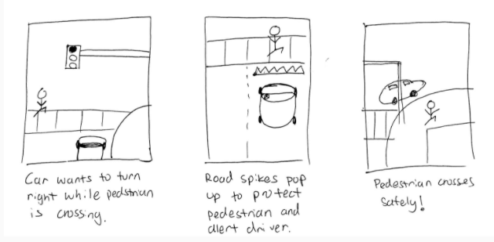

Background
In September of 2017, the four of us enrolled in COGS160: Civic Design taught by Steven Dow at UC San Diego. The focus on this class would be entering into Design for San Diego's 2017 Civic Challenge and after the challenge was over to continually iterate on our design.
The focus of D4SD’s 2017 challenge was: How do we create a San Diego where we all move freely? Judging was conducted in two rounds. In the first, experts in human-centered design, civics, and business assessed our deliverables based on four criteria: human-centered design process, novelty, feasibility, and impact. In the second, distinguished jurors assessed the finalists.
For the D4SD challenge, we conducted online research, five hours of total field observations between us, and interviews. For our deliverables, we created a poster and prototype and wrote a high-level description of our solution.
After the D4SD challenge, we reflected on the experience and the feedback provided by the judges. From this, we created a usable prototype and tested it. After testing, we iterated on our concept and presented our refined prototype to panel of judges invited to the UC San Diego campus by Steven Dow.
Our team attending Design Forward's Community Mixer on October 25th where our poster was displayed. From left to right: Marie Schneider, Yuka Okina, Alexander Chen, Tamar Esserman.
Our Focus
Last year there were 307 fatal car crashes in San Diego. According to KPBS, more than twice as many people have died from car crashes in San Diego than have been murdered. There are 15 intersections in San Diego, named the Fatal 15, where more than 200 people have been killed or seriously injured.
Due to this, we decided to tackle was the issue of safety in busy intersections. How do we leverage existing technology and design to create a safer environment for drivers, pedestrians, and cyclists?
Observations
To gain a better understanding of current safety issues in intersections, we specifically looked at a few intersections in the city of San Diego labeled as the Fatal Fifteen. These fifteen intersections had the highest rates of accidents. By looking at the most dangerous intersections, we were able to more easily identify problems within the intersection and the causes for the high number of accidents.

A car made a wrong turn into a one-way street

Pedestrians/cyclists stand into the intersection
Car stopped over crosswalk, close call with other car
Interviews
Through our interviews and observations at some of the Fatal Fifteen intersections, we were able to gain a few key insights about the problem. Among some of the problems we noticed in the intersection was the “busyness” of the intersection. Beyond the large number of cars, cyclists, and pedestrians, we saw firsthand how multiple modalities of travel were competing with one another. Buses, cyclists, cars turning left, cars dropping passengers off, garbage trucks, and car parking were all vying for space on the outside lanes closest to the street. In addition, we saw that in order for cars to enter parking lot entrances, they had to make 3-4 lane changes and the tight space of the intersection meant that cars often turning left on the intersection would cut almost vertically across the lanes to enter the parking lot.
A few key insights we gained from interviews were that new drivers or drivers in an unfamiliar area are forced to process information from signs, nearby cars, and navigation systems and can often experience a “cognitive overload” where the sheer number of elements that drivers are expected to observe and react to are unreasonable. In addition, each stakeholder in the intersection has different priorities. A pedestrian crossing the street may be concerned with reaching their destination and crossing the street safely. However, a driver in that same intersection might have the priority of getting to work on time and not have pedestrian or cyclist safety at the forefront of their thoughts.
Concept Generation
Streets would be divided in levels so pedestrians, cyclists, and drivers don't interact

Spikes would go up and retract from the streets to physically stop cars
During our concept generation process, we were focused on increasing safety for all stakeholders in the intersection. Since we found cars to be one of the most prevalent stakeholders within the intersection, we focused a lot of our concepts on cars.
Some of our concepts included dividing the intersection into multiple layers and having stakeholders navigate through the intersection on multiple “levels” as to avoid any possibility of collisions from different stakeholders (i.e. cars, pedestrians, and cyclists). In the same way a multistory building increases the amount of available space, so too would dividing the intersection into multiple layers increase the amount of effective intersection space and create degrees of separation from different stakeholders with the option of further dividing those stakeholders based on direction.
One focus we had during our second round of concept generation was leveraging existing technology to generate a realistic solution to our problem that could be implemented by the city at a relatively low cost. This thought inspired us to examine current innovations within the San Diego area with regards to transportation. We learned that San Diego was rolling out Smart Street Lights which were street lights with many sensors installed including a camera. We realized we could utilize machine learning and computer vision to recognize objects within the intersection. These Smart Street Lights can recognize and track objects such as cars and pedestrians and alert drivers, pedestrians, and cyclists of potential collisions and accidents by tracking their positional and directional data.
To deliver this information to primarily drivers, we decided that the best way to communicate this information to drivers would be through a heads-up display on the windshield. By ensuring that the display was overlaid onto the windshield and semi-transparent, we would 1. enable drivers to keep their eyes on the road and not look down or away, 2. allow the driver to decide what to focus on. By presenting the display on the windshield, we place the display in plain sight while remaining out of mind when unneeded.
Low-Fidelity Prototype
One focus we had during our second round of concept generation was leveraging existing technology to generate a realistic solution to our problem that could be implemented by the city at a relatively low cost. This thought inspired us to examine current innovations within the San Diego area with regards to transportation. We learned that San Diego was rolling out Smart Street Lights which were street lights with many sensors installed including a camera. We realized we could utilize machine learning and computer vision to recognize objects within the intersection. These Smart Street Lights can recognize and track objects such as cars and pedestrians and alert drivers, pedestrians, and cyclists of potential collisions and accidents by tracking their positional and directional data.
To deliver this information to primarily drivers, we decided that the best way to communicate this information to drivers would be through a heads-up display on the windshield. By ensuring that the display was overlaid onto the windshield and semi-transparent, we would 1. enable drivers to keep their eyes on the road and not look down or away, 2. allow the driver to decide what to focus on. By presenting the display on the windshield, we place the display in plain sight while remaining out of mind when unneeded.
Poster
For the D4SD challenge we created a poster to illustrate our problem, research, and proposed solution.
Feedback
From feedback received from judges of the D4SD competition, we learned that they thought that the heads-up display would be distracting to drivers, further contributing to the cognitive overload experienced by drivers. The second point made by the judges was that our idea may be unfeasible and that the information, when displayed on the heads-up display, may not be presented in time for the driver to alter their course before a collision.
In response to the first critique, we wanted to study distractions that driver’s currently experience such as having Google Maps loaded on their phone and having to continually look for pedestrians, cars, and cyclists in addition to street signs. By comparing a prototype of our solution of a heads-up display to alternatives, we would be able to gauge how much more or less distracting our solution would be to drivers. We would measure variables such as how many times a driver took his or her eyes off the road to look at either their phone or at signs on the roads and the corresponding duration.
In response to the second critique, we believe that our idea is implementable. By utilizing wireless communication technology such as Bluetooth, NFC, Wi-Fi, or any other wireless signal, these Smart Street Lights could transmit data to a data center where machine learning and computer vision algorithms are run on that data and then sent to various cars to provide them with contextual information. Self-driving car software exists and is currently being iterated on by companies such as Tesla, Waymo, and Uber and this technology could be leveraged to help process that intersection data. The software would need to be predictive and not reactive in order to provide drivers ample time to alter their course and avoid an accident or collision. One challenge we recognize in implementing our idea is putting together a team of developers who can create a network to transfer the data from San Diego’s Smart Streetlights to a data center to be processed and then sent back to cars within the intersection.
User Testing
We tested our design by "WOZing" our prototype with drivers. We first looked at how distracted drivers were using google maps, and then tested the effectiveness of a device that would highlight important objects in the street.
We held a phone at the front and side of the car to capture different angles. We then skyped this screen to another phone and drew over objects that we viewed as a potential threat to safety, such as another car or pedestrian. We also tried to use auditory cues such as a beeping noise if a driver was in danger.
We gathered important key insights from this user testing. People rarely looked at our video, choosing to keep their eyes on the road. Beeping noises are also distracting and don't tell the driver what object to look out for, such as a pedestrian or driver. Even while using google maps, users rarely looked at the map or directions and mainly relied on the auditory information. Finally, alerts should be contextual, and not identify all objects, only potential threats.
Redesign
Pivoting from our initial design, our team decided to take the feedback from both judges and results from our user testing and move away from the heads-up visual interface to an audio interface. From our research of how drivers currently used Google Maps, we noticed that drivers only briefly glanced at their phone screen while they were stopped at a red light and relied primarily on the audio alerts. The second pivot we made was to focus on a single goal. In our previous design, we wanted to tackle both the challenge of navigating in an unfamiliar area and safety in the intersection. In our newest design, we decided to focus solely on safety in the intersection. We designed our application in a way so that it could be run concurrently with Google Maps and could run in the background like a music application such as Spotify or Apple Music.
Features
Our newest design is Personal Assistant for Cars (PAC). PAC is a smartphone application that provides audio alerts to drivers when it senses an urgent emergency, i.e. an imminent collision. To determine when an imminent collision is about to occur, we are leveraging the data from San Diego’s newly installed and growing ecosystem of smart street lights. By using advance software such as image recognition, computer vision, and tracking, our software will first identify each of the parties in the intersection (i.e. car, cyclist, and pedestrian) and calculate each of their respective speeds, accelerations, and direction. Our software will specifically target outliers, those parties moving faster or accelerating faster than other parties in the intersection. In addition, our software will utilize predictive models to determine the paths of each of the parties and alert parties ahead of time so they have enough time to react and avoid collisions. One important aspect to our design is only alerting drivers of relevant information. We recognized early on that if we kept providing drivers with useless audio alerts, they would mute our system or begin to ignore our alerts which would negate our solution. Our audio alerts would only alert drivers if a crash was imminent if no course or speed was adjusted.
Competitive Analysis
Some competitors in the space of safety are autonomous vehicles or vehicles with built-in sensors for car and object detection. However, these features are usually offered in high-end vehicles such as the Tesla Model S, making them inaccessible to the general population. In addition, our solution leverages an entire network of smart street lights that encompasses a much wider area than the near proximity of a single car.
Feasibility
Regarding the feasibility of our concept, we kept this at the forefront during our redesign process. We got rid all the additional hardware required for the heads-up display and had users to simply have a smartphone, download our application, and have an active data connection. We recognize that the greatest challenge for our design is developing the software, primarily backend, to predict and alert drivers of imminent collisions. However, we also know that other companies are working on projects in this space such as Waymo, Uber, and Tesla so we know that this process, while difficult, is possible.
In the example scenario above, a driver in the right lane is about to make a right turn. Most drivers look to their left for oncoming traffic to determine if it is safe to turn. The shaded region represents the driver’s field of view. However, the driver does not see the cyclist to his right. Our application would utilize the data from a smart street light in the intersection to alert the driver that there is a cyclist beside him to prevent a collision.
Example Scenario
In the example scenario below, a driver in the right lane is about to make a right turn. Most drivers look to their left for oncoming traffic to determine if it is safe to turn. The shaded region represents the driver’s field of view. However, the driver does not see the cyclist to his right. Our application would utilize the data from a smart street light in the intersection to alert the driver that there is a cyclist beside him to prevent a collision.
Budget
The true cost is gathering a team together to develop software that not only is able to gather and interpret the data from San Diego’s Smart Streetlights but also process that data and deliver it to drivers in a timely manner. This means hiring at least a few back-end developers and front-end developers to code the application user’s can download to their phone. Depending on the size of the team, the cost to fund such a venture could range from $100,000 a year to well over $500,000 a year.
To fund such a team, we will seek funding from grants, the city of San Diego, and partnerships with businesses. Since the value of this technology and service is not limited to any single type or brand of car, we believe that car companies will be willing to fund and use this technology to integrate into their future cars. As more and more companies attempt to develop autonomous vehicles, we believe that the demand for a product like ours will only increase. It is possible that, after proving the success of this technology and usefulness of this service, be bought out by a company to integrate into their existing AV and user-interface. Some companies that would be interested in such an acquisition include but are not limited to Uber, Waymo (Alphabet), Ford, Tesla to name a few. A partnership between multiple companies may also occur in which multiple companies find value in the technology and each fund us to license and use our technology natively into their products as a way to differentiate themselves and leverage our technology as a way to distinguish their product in the marketplace.
Future Steps
For future steps for our project, we want to test this audio alert interface with drivers and observe their effectiveness and interview drivers about their experience. From there, we would begin implementing this solution by gathering video feeds from the smart street lights and developing the algorithms to first recognize parties in the intersection (i.e. cars, cyclists, pedestrian) and track their movement, speed, direction, and acceleration. Then we would develop and fine-tune predictive models to determine when parties in the intersection would crash and alert drivers.
Some additional features we hope to provide is to integrate artificial intelligence into PAC and add the functionality of being to ask it questions such as: “Is it safe to make a right lane change?” In the same way we noticed that drivers when driving with another person in the car will often ask that other person to help them look behind them while backing out of a parking spot or making a lane change, so too would our solution offer contextual information to drivers when they need it.
An additional feature we hope to add in the future is adapting the application for pedestrians and cyclists so that they too can be alerted when in the intersection and avoid any collisions.
Presentation
To illustate our concept and process, we created a presentation of our work.
Conclusion
The Mayor of San Diego, Mayor Faulconer in his support of Vision Zero in 2015 was quoted saying, “There is nothing more important than public safety which is why we’re working toward the goal of zero traffic deaths in San Diego by 2025.” We sincerely believe that our solution has the potential to make this goal a reality and make intersections safer for all parties involved.